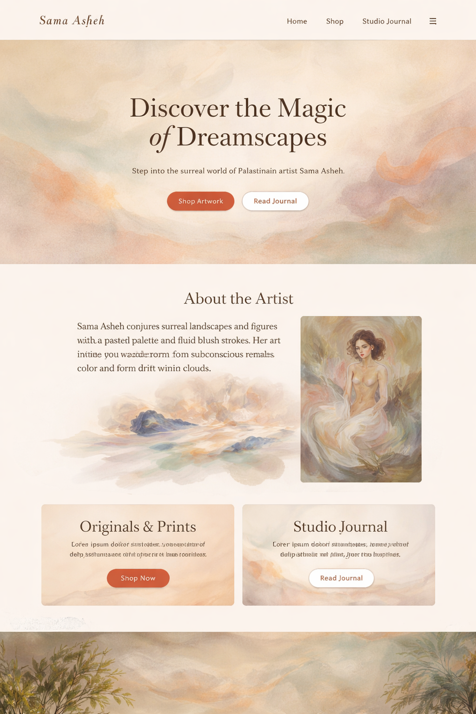
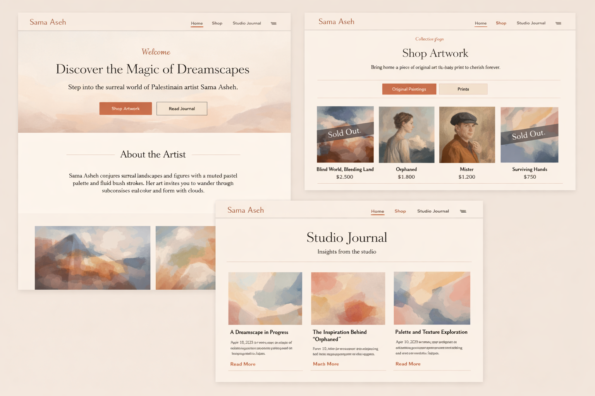
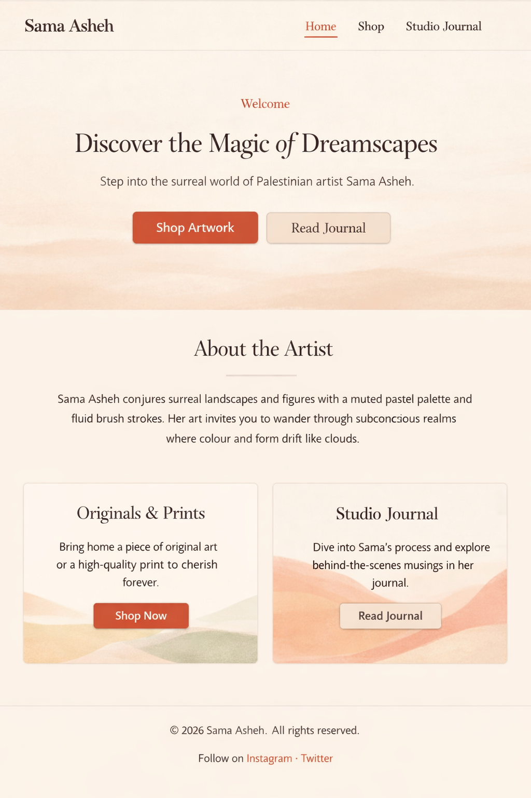

Sketching Dreams
Join me as I explore new compositions through loose sketches and colour studies. It’s where many of my surreal landscapes begin.
Read MoreStories
Peek behind the curtain and follow Sama’s creative journey.

Join me as I explore new compositions through loose sketches and colour studies. It’s where many of my surreal landscapes begin.
Read More
A behind‑the‑scenes look at how I mix gentle pastel tones that give my works their signature dreamlike quality.
Read More
Discover how I build texture through translucent washes and expressive brushwork to evoke depth and emotion.
Read More